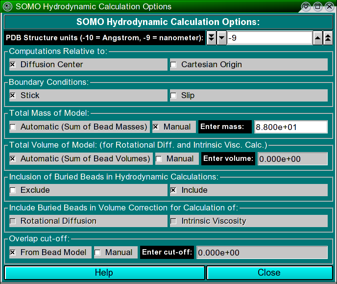

| |
Manual |

In this module, various options controlling the computations of the hydrodynamic
parameters for the bead model can be set.
The Structure units (-10 = Angstrom, -9 = nanometer) field sets the
scale units of the bead model being examined. Models derived from PDB structures
are in Angstrom units, but the user might wish to compute the hydrodynamic
parameters for bead models coming from different sources, for instance from
small angle solution scattering data, which might be in other units like
nanometers. The field sets the exponential relating the units to meters (default:
-10).
The Computations Relative to box presents two alternative options,
Diffusion Center and Cartesian Origin. The differences between the
two are subtle, and are fully described in Garcia de la Torre and Bloomfield,
Q. Rev. Biophys. 14:81-139, 1981 (default: Diffusion Center).
The Boundary Conditions box also has two alternative options,
Stick (6&pi&eta0) or Slip (4&pi&eta0). For
beads whose size is greater than the hypothetical solvent molecules, like those
generated by the default SOMO settings, the stick boundary conditions
apply. The slip boundary conditions should be used only when each atom
is represented with a bead (see Venable and Pastor, Biopolymers 27:1001-1014,
1988; Garcia de la Torre and Bloomfield, Q. Rev. Biophys. 14:81-139, 1981)
(default: Stick).
The Total Mass of Model box has two checkboxes allowing the user
to select or override the Automatic (Sum of Bead Masses) computation
of the mass of the model obtained by summing over the mass assigned to each bead.
This can be done by selecting the Manual checkbox and entering a value in
the Enter mass field. For normal operations on models generated by SOMO from
PDB files, the Automatic option will do fine, except if a relevant number
of non-coded or incomplete residues are skipped or are modeled with the
Automatic Bead Builder (because then the
total mass will be appreciably underestimated). If a Manual value is entered
in this field (and the Automatic (Sum of Bead Masses) checkbox is deselected),
a message will be displayed in the progress window ("ATTENTION: MW = "). This should
avoid the use of an incorrect external total mass value resulting by inadvertently
leaving the Manual option selected from a previous model-generating session.
Otherwise, the Manual option is mainly for analyzing models generated from
external sources, for which the beads might not carry the mass information, and only
the total mass is known. The total mass is necessary for the computation of the
Sedimentation Coefficient and of the Intrinsic Viscosity
(default: Automatic (Sum of Bead Masses)).
Similarly, the Total Volume of Model (for Rotational Diff. and Intrinsic
Visc. Volume Correction) box has two options, Automatic (Sum of Beads Volumes)
and Manual. In the Automatic mode, the value is
obtained by computing the volume of each bead included in the hydrodynamic
computations (see the Inclusion of Buried Beads in Hydrodynamic Calculations
box below) and summing up their values. This Volume Correction is important
for the proper computation of the Rotational Diffusion Coefficient and of the
Intrinsic Viscosity (Garcia de la Torre and Rodes, J. Chem. Phys.
79:2454-2460, 1983; Garcia de la Torre and Carrasco, Eur. Biophys. J. 27:549-557,
1998). It should be left in Automatic mode unless there are serious
reasons for entering a different value in the Enter Volume field after
selecting the Manual checkbox. Entering a Manual value will also
disable the Include Buried Beads in Volume Correction for Calculation of
box below (default: Automatic (Sum of Beads Volumes)).
The Inclusion of Buried Beads in Hydrodynamic Calculations box allows to either
Exclude or Include the beads labeled as buried in the hydrodynamic computations.
We have demonstrated (Rai et al., Structure 13:723-734, 2005; Brookes et al., Eur. Biophys. J.,
in press, 2009) that excluding the buried beads has no effect on the translational diffusion properties, and could even improve the computation of the rotational diffusion and
intrinsic viscosity. Moreover, as the memory required by the full
supermatrix inversion procedure implemented in the hydrodynamics computations
module grows exponentially with the number of beads employed, excluding the
buried beads from the computations allows both a faster processing and the
capability of processing bigger structures (default: Exclude).
The Include Buried Beads in Volume Correction for Calculation of box
gives the possibility, when the buried beads are Excluded from the
hydrodynamic computations, of nevertheless summing their volume to that of the
exposed beads for the computation of the volume correction for either,
both or neither the Rotational Diffusion and the Intrinsic Viscosity
(see above for explanations on the volume correction). However, if a
Manual value is entered in the Total Volume of Model field above, this
option is obviously not available. In any case, our testing (Rai et al., Structure
13:723-734, 2005; Brookes et al., Eur. Biophys. J., in press, 2009) has suggested that
if the buried beads are excluded from the hydrodynamic computations, their volume should
not be included in the volume correction neither for the Rotational Diffusion
nor for the Intrinsic Viscosity (default: both deselected).
Finally, the Overlap cut-off box allows the user to select a different
cut-off when checking the model before the hydrodynamic computations (it should
be recalled that the hydrodynamic interaction tensor used is valid only
for non-overlapping beads). If an overlap exceeding the threshold is found
between any couple of beads, the computations are halted. An overlap cut-off is
already present in the Bead Overlap Reduction set-up options, and if the
bead model has been internally generated, then the From Bead Model
checkbox should be selected. For models generated in other ways, the tolerance
can be increased (at your own risk!) by selecting the Manual checkbox
and entering a value in the Enter cut-off field. If this cut-off is different
from the one present in the Bead Overlap Reduction module, a message alerting of
the different cut-off value will appear in the progress window when the hydrodynamic
computations are started (default: From Bead Model).
This document is part of the UltraScan Software Documentation
distribution.
Copyright © notice.
The latest version of this document can always be found at:
http://www.ultrascan.uthscsa.edu
Last modified on September 3, 2009.